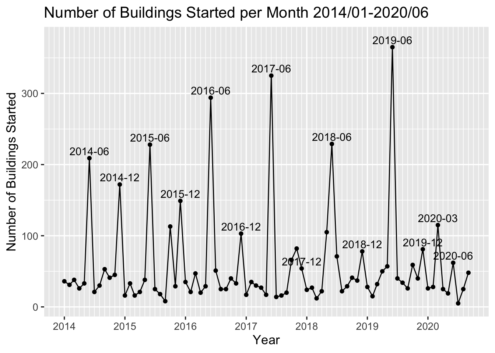
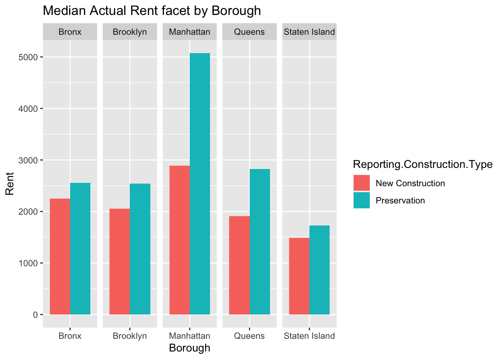

Chapter 5 Results
5.1 Analysis on Number of Projects by Time
Walking on the streets of New York, we often find scaffolding on the side of the road, which means that the building near us is being built or remodeled. This kind of construction or reconstruction are happening in many places at the same time every day. We want to explore the changes in such projects in different statuses over previous several year in various aspects and to understand the pattern of apartments in New York so that we can have a better view about changes in this city over years.

From the dot plot on number of projects started and completed, we first notice that the number of projects started are roughly the same for previous 5 years and 2018 has highest number of projects started. The trend of number of projects completed has an obvious pattern: except for 2020, the number of projects completed increases by year. When carefully look into the data plot, we also see that the year of 2020 has the lowest number both on projects started and completed. There are two potential reasons. First, our data set has records up to 2020-09, meaning that, compared with previous years, 2020 have three more months to have projects started or completed so that the two dots can be higher in the plot if we review this plot after several months. However, However, based on the current data, even if the last three months of 2020 are recorded, the number of projects are still much smaller than previous years. Therefore, the second reason is that, the current COVID-19 situation has largely affected the process of each project.
In order to verify our conjecture, we separate each dot in previous plot into 12 dots, each representing a month. To avoid having too many data points at the same plot, we plot number of project of started and completed into two different plots.

From the data we can see that, in the year of 2020, the trend before April is quite similar with that of previous years in both starting and completion plots. The number of projects started is even much larger in March than previous years. It makes sense because in previous plot we see an increasing trend in number of projects started by year. To have larger number projects started in 2020 we need to have larger number in each Month. However, the number drops a lot in April for both projects started and completed, which is the time COVID-19 situation becomes serious in NYC. Therefore, our thoughts that the process of projects is largely affected by the epidemic is confirmed here.
We can also see an interesting pattern in these plots: the projects are mostly started in June and December, and the number started in June is larger than December. Similarly in plots with number completed, the projects are largely completed in summer and winter. Our explanation is that projects usually take 6 months or a whole year. But more rigorous analysis requires some domain knowledge in other fields such as archituecture.